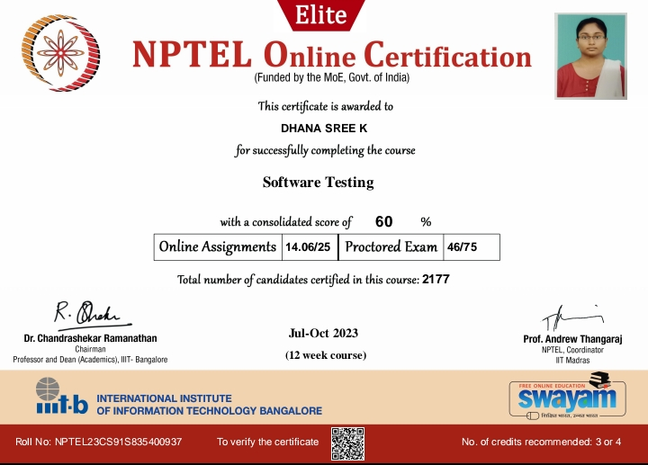

About Me
Hello! I'm Dhanasree, Creating this portfolio has been a labor of love to my dedication and passion for web development. Through this platform, I aim to Demonstrate My Skills Each project showcased here reflects my technical capabilities and the practical application of my knowledge in real-world scenarios. It highlights my proficiency in various web technologies and my ability to create functional and aesthetically pleasing websites.
My Journey
 GOVT Vinobha Hr sec school
GOVT Vinobha Hr sec school  work as marketing intern at santhila databot Inplant Trainning at techvolt
work as marketing intern at santhila databot Inplant Trainning at techvoltMy portfolio tells the story of my academic and professional journey, from my education at JKKN College of Engineering and Technology to my internships at Techvolt and Corizo. It provides a comprehensive view of my growth and learning experiences.
My Achievements
By showcasing my projects and internships, I can illustrate the tangible outcomes of my hard work and dedication. Notable achievements, such as completing a software testing course through NPTEL, are also featured to provide a well-rounded view of my capabilities.
My Passion
This portfolio serves as a bridge to connect with industry professionals, potential employers, and collaborators. It opens the door to new opportunities and helps me build a network within the tech community. The dynamic nature of my portfolio underscores my commitment to continuous learning and staying updated with the latest technologies. It reflects my enthusiasm for exploring new ideas and integrating them into my work.